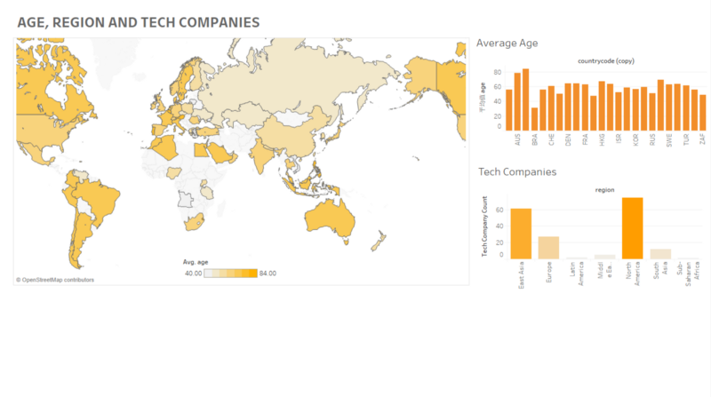

The page utilizes jQuery codes to have this effect.
Using .slideUp() and .slideDown(), we were able to expand the article inside a page.
It also features auto scrolling, so the you will always be viewing the articles at approximately eye level.
[Pinned]About Me
By Alligrater
Hello, I am Shuxing Li, a computer science / IMGD double major student in WPI.
As of D-Term, 2018, many were learnt from the CS3041 Design Process. Here's some of our designs.
Design for Others
By Alligrater
In this design, we attempted to recreate Worcester Public Library's homepage into a smartphone application. The application is intended to be used by women who are aged 30-40, who is more likely to have less time, and not so skilled with technologies.

We looked up the data on billionaires all over the world, and attempted to visualize them with both graphs and a short video. The graphs attempted to show a gender difference between the billionaires, and how their age differents.
A chatbot is created to take with you about the animal testing issues. He will ask some questions, or answer some of your questions. This is the Animal Testing Bot(ATB).